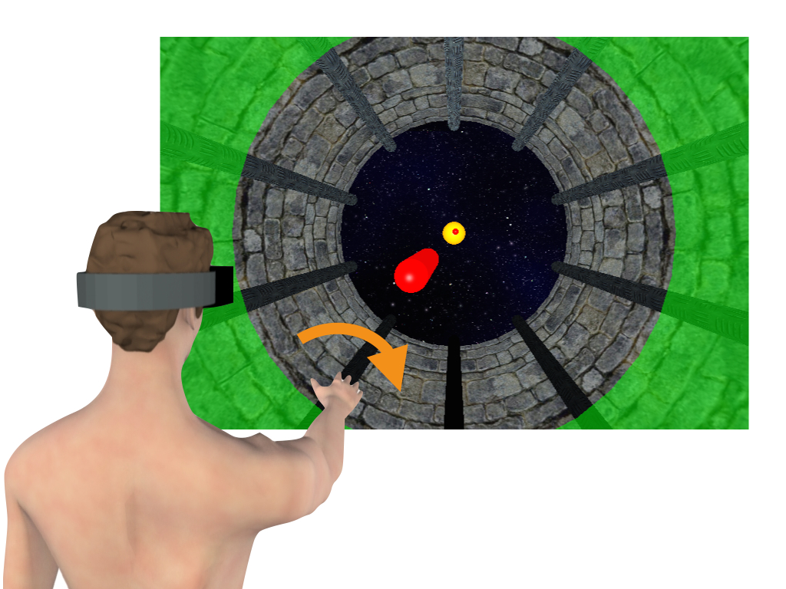
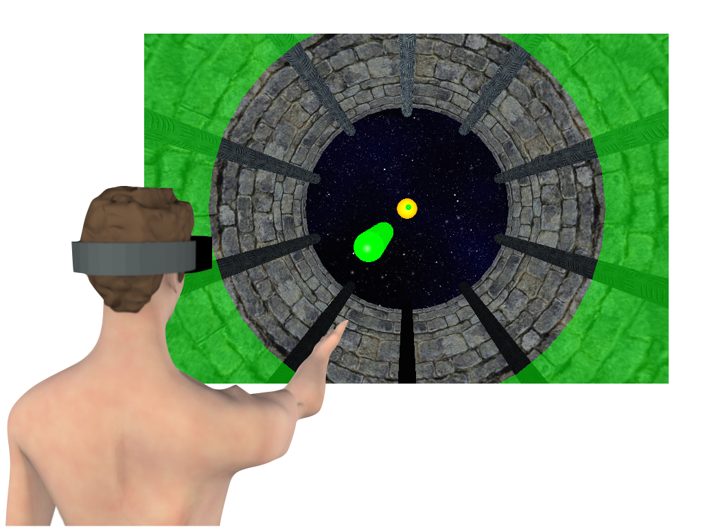

Step 2: Acquire the Target Orientation
Once your head is aligned with your body (i.e. when the halo is bright green), a yellow spherical target will appear. Raise your arm and point your hand such that the virtual laser-pointer falls on the target.

Rotate your hand in a rolling motion around the axis of your arm until the virtual pointer and tool turn bright green. Memorise the hand orientation.

When the target disappears, lower your arm to a neutral position on your lap.
Note: Please do not try to maintain the memorised roll orientation of the hand. After target acquisition you should return your hand to the same neutral position on every trial.